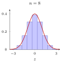
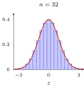
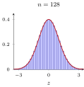
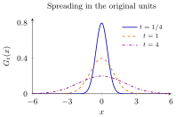
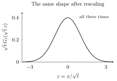

About these notes. This is optional reading outside the course syllabus, separate from the seven course parts and the numbered lectures. The online questions below are paraphrased and credited. The explanations combine course material with the cited mathematical and historical sources; they are not inherited lecture notes. These notes are a newly written synthesis. Online sources were consulted October 28–29, 2026.
The question we will pursue. Why does the particular curve \[\phi(x)=\frac{1}{\sqrt{2\pi}}e^{-x^2/2}\] appear in so many calculations? Saying by the central limit theorem names a result, but does not yet explain its mechanism. We will first count coin-toss outcomes, then identify what remains when many small independent contributions are combined.
Reading route. Section 1 collects questions and terminology. Section 2 starts with averaging and coin counts. Section 3 traces the history from de Moivre through Gauss and Laplace to later developments. Section 4 derives the Gaussian heat kernel, then connects independent sums, random walks, Brownian motion, and the evolution of a probability density. Section 5 characterizes the Gaussian as the unique fixed point of standardized addition among centered, variance-one laws. Section 6 gives other characterizations, limitations, a table of key notions, and exercises with complete solutions.
Course connections. Lectures 2 and 5 provide densities and characteristic functions; Lectures 9–10 distinguish laws of large numbers from distributional limits. Lecture 8’s likelihood calculations connect to Gauss’s error model.
1. Questions and starting points
1.1. Questions collected from online discussions
These prompts are paraphrases of questions posed by the named contributors. The links credit the questions; the answers in these notes are developed independently and checked against the references. Forum answers are not being used as mathematical authorities.
How was the shape discovered? Why an exponential of a square, instead of a triangle or some other symmetric curve? Adapted from bonehead’s 2016 question on Cross Validated [1]. See the coin-count calculation in Section 2.2 and the historical account in Section 3.
Why call this distribution normal? Does that mean other distributions are unusual? Adapted from Frans Rodenburg’s 2019 question [2]. See Section 1.2.
What makes the CLT plausible before one reads a formal proof? Adapted from user28’s 2010 question [3]. The successive steps of Section 2 address this question.
Is it the sample mean, or the standardized sample mean, that has a normal limit? Adapted from Driss’s 2014 question [4]. See Section 2.1.
Can a normal model be justified without appealing to the CLT? Adapted from gardenhead’s 2019 question [5]. Section 6 gives several precise answers.
Two further course questions guide the calculations: Why divide a centered sum by \(\sqrt n\)? And what goes wrong with the slogan that everything becomes normal when the sample is large?
1.2. What does the word normal mean here?
The terminology developed later than the mathematics. The historical note [9] records uses by Peirce (1873), Lexis (1877), and Galton (1877), followed by Galton’s more systematic use in the 1880s. There is no need to infer a mathematical property from the name.
In this course, normal names the family of densities \[f_{\mu,\sigma}(x)=\frac{1}{\sigma\sqrt{2\pi}} \exp\!\left\{-\frac{(x-\mu)^2}{2\sigma^2}\right\}, \qquad x\in\mathbb{R},\quad \sigma>0.\] It does not mean that every population follows this law, or that a non-normal population is defective. A positive lifetime may be strongly right-skewed; a binary observation has only two possible values. Both can be entirely reasonable models.
A bell shape is not a definition. Symmetry and a peak at the center do not specify a density. A triangular density and a Student \(t\) density are symmetric too. To obtain the normal formula, we need additional mathematical structure.
Section 3 develops the history separately: the curve first appeared in a counting problem, acquired a major role in the analysis of measurement errors, and later entered many other models.
2. Why averages look normal
2.1. First identify the random object
Suppose \(X_1,X_2,\ldots\) are independent and identically distributed, with \(\mathbb{E} X_i=\mu\) and \(0<\operatorname{Var}(X_i)=\sigma^2<\infty\). Write \[S_n=\sum_{i=1}^n X_i,\qquad \overline X_n=\frac{S_n}{n},\qquad Z_n=\frac{S_n-n\mu}{\sigma\sqrt n} =\frac{\sqrt n(\overline X_n-\mu)}{\sigma}.\] These are different objects. Their scales explain why the law of large numbers and the CLT are compatible.
| Object | Standard deviation | What changes as \(n\) grows? |
|---|---|---|
| One observation \(X_i\) | \(\sigma\) | Its distribution stays the same. |
| Sum \(S_n\) | \(\sigma\sqrt n\) | Its center is \(n\mu\) and its spread grows. |
| Mean \(\overline X_n\) | \(\sigma/\sqrt n\) | It concentrates around \(\mu\). |
| Standardized mean \(Z_n\) | \(1\) | We magnify the shrinking deviations to retain a visible spread. |
For example, if \(X_i\) records a coin toss as \(0\) or \(1\), taking more observations never turns an individual \(X_i\) into a continuous variable. The empirical histogram of the individual observations still has two bars. The approximately Gaussian shape concerns the sampling distribution of the mean: imagine repeating the entire experiment of \(n\) tosses and recording one mean from each repetition.
The law of large numbers gives \(\overline X_n\to\mu\) in probability. The CLT says \(Z_n\Rightarrow N(0,1)\), that is, \[\mathbb{P}(Z_n\le z)\longrightarrow \Phi(z)\quad\text{for each }z\in\mathbb{R}.\] Thus \(N(\mu,\sigma^2/n)\) is a useful varying approximation to the distribution of \(\overline X_n\); the mean’s limiting distribution is the point mass at \(\mu\), not a fixed nondegenerate normal law.
Why the square root? Independence makes variances add, so \(\operatorname{Var}(S_n-n\mu)=n\sigma^2\). Dividing by \(n\) erases the fluctuations in the limit. Dividing by \(\sqrt n\) keeps their variance at a constant scale. This explains the normalization, although it does not yet determine the shape.
Pause and think. For fair coin tosses, how many times smaller is the standard deviation of the mean when the sample size increases from \(25\) to \(100\)? What happens to the standard deviation of the sum? Full exercise and solution.
2.2. Counting paths: why is the middle more likely?
Let \(K_n\) be the number of heads in \(n\) independent fair tosses. Every ordered sequence has probability \(2^{-n}\), but the number of sequences with \(k\) heads is \(\binom nk\). Therefore \[p_n(k)=\mathbb{P}(K_n=k)=2^{-n}\binom nk.\] For \(n=8\), there is one all-heads sequence and \(70\) sequences with four heads. The central count is more likely because many more distinct sequences produce it. This is also the idealized counting mechanism of a Galton board: each independent left/right choice selects one path.
Counting explains a central peak. We still need to explain why the central profile is approximately \(e^{-x^2/2}\) rather than a triangle.
2.3. The quadratic exponent comes from accumulated small penalties
Take \(n=2m\). Compare a count \(m+j\) to the central count \(m\), with \(j\ge0\):
\[\frac{p_n(m+j)}{p_n(m)} =\prod_{r=1}^j\frac{m-r+1}{m+r}.\]
(1)Each step away from the center incurs a small multiplicative penalty. Taking logarithms turns the product into a sum. For \(j=O(\sqrt n)\), the expansion \(\log(1+u)=u+O(u^2)\) gives \[\begin{aligned} \log\frac{p_n(m+j)}{p_n(m)} &=\sum_{r=1}^j\left\{\log\left(1-\frac{r-1}{m}\right) -\log\left(1+\frac r m\right)\right\}\\ &=-\frac1m\sum_{r=1}^j(2r-1) +O\!\left(\frac{j^3}{m^2}\right) =-\frac{j^2}{m}+o(1). \end{aligned}\] The odd numbers add to a square: \(1+3+\cdots+(2j-1)=j^2\). Set \(x=2j/\sqrt n\), the deviation measured in standard deviations of \(K_n\). Since \(m=n/2\), the leading exponent becomes \[-\frac{j^2}{m}=-\frac{x^2}{2}.\] This supplies a concrete reason for the square in the exponent. The logarithmic penalty grows approximately linearly with distance from the center; its accumulated effect grows quadratically. Negative \(j\) are covered by the exact symmetry of the fair binomial law.
Getting the constant right. Stirling’s approximation \(r!\sim\sqrt{2\pi r}(r/e)^r\) yields \[p_n(m)=2^{-2m}\frac{(2m)!}{(m!)^2} \sim\frac{1}{\sqrt{\pi m}}=\sqrt{\frac{2}{\pi n}}.\] Consequently, for standardized lattice points \(x=2j/\sqrt n\) in a fixed bounded range,
\[\mathbb{P}\left(\frac{K_n-n/2}{\sqrt n/2}=x\right) \approx \underbrace{\frac{2}{\sqrt n}}_{\text{lattice spacing }\Delta_n} \underbrace{\frac{1}{\sqrt{2\pi}}e^{-x^2/2}}_{\phi(x)}.\]
(2)The factor \(\Delta_n\) matters: a discrete probability is approximated by density times width, not by a density alone. Adding these small probabilities across a bounded interval produces a Riemann sum for the normal probability of that interval. This is a local central calculation; it is not a uniform relative-error claim in the extreme tails.



Pause and think. For eight fair tosses, compare the probabilities of four and five heads. Why would it be incorrect to compare a binomial point probability directly with the height of a normal density? Full exercise and solution.
2.4. Why does a similar shape appear beyond coin tosses?
Coin counting explains one model. To see what survives across different models, revisit the characteristic-function argument from Lecture 10. Let \(Y_i=(X_i-\mu)/\sigma\) and \(\psi(t)=\mathbb{E} e^{itY_1}\). Mean zero and variance one imply
\[\psi(u)=1-\frac{u^2}{2}+o(u^2)\qquad(u\to0).\]
(3)Only a finite second moment is needed. One justification writes \(e^{iv}=1+iv-v^2/2+v^2r(v)\) with bounded \(r\) and \(r(v)\to0\), then applies dominated convergence to \(Y_1^2r(uY_1)\). There is no assumption that a moment-generating function exists.
Independence now makes the characteristic function of the standardized sum a product: \[\mathbb{E} e^{itZ_n} =\left[\psi\left(\frac{t}{\sqrt n}\right)\right]^n =\left[1-\frac{t^2}{2n}+o\left(\frac1n\right)\right]^n \longrightarrow e^{-t^2/2}.\] The limit is the characteristic function of \(N(0,1)\); the continuity theorem gives the CLT. Lecture 10 supplies the full course proof; Tao [10] provides an additional author-written treatment.
What information survived? Centering removes the linear term. Scaling fixes the quadratic term. The remaining terms vanish in this limit. Different parent distributions can therefore produce the same limiting fluctuation shape. The small argument \(t/\sqrt n\) is where the approximation happens; we are not assuming that the original density is already close to Gaussian.
A related picture: adding distributions. For independent variables, the distribution of their sum is a convolution. For example, adding two independent \(\operatorname{Uniform}(0,1)\) variables gives a triangular density. Repeated addition averages shifted copies of the current profile, while recentering and rescaling keep its location and spread fixed. Sanderson’s visual explanation [11] is useful for this picture. The characteristic-function calculation identifies the limit and supplies the missing assumptions.
A fixed shape is not enough. Independent normal variables satisfy \((G_1+G_2)/\sqrt2\sim N(0,1)\) when \(G_1,G_2\sim N(0,1)\). This shows that normality is preserved by standardized addition; it does not by itself prove that other distributions approach it. Section 5 develops the fixed-point interpretation, including uniqueness and convergence under repeated addition.
Pause and think. Find the density of the sum of two independent \(\operatorname{Uniform}(0,1)\) variables. It is symmetric about its mean; why is it still not normal? Full exercise and solution.
3. History of normal distribution
The normal distribution developed through several problems: counting outcomes, combining imperfect measurements, and describing the cumulative effect of many small contributions. Its history helps distinguish these different explanations. The name Gaussian recognizes Gauss’s major contribution to error theory; the curve itself appeared before his work. The account below is selective, with modern notation used for the formulas.
3.1. Before Gauss: de Moivre and binomial probabilities
Early probability calculations involved sums of binomial coefficients. These are exact but become cumbersome when the number of trials is large. Jacob Bernoulli had obtained bounds on binomial sums before de Moivre’s normal approximation. Such bounds address concentration; they need not identify the shape of the remaining fluctuations [17].
In 1733, Abraham de Moivre obtained the Gaussian approximation to binomial probabilities in a privately circulated supplement to his Miscellanea Analytica [6]. In the fair-coin case, with \(K_n\sim\operatorname{Binomial}(n,1/2)\), the central approximation is \[\mathbb{P}\{K_n=n/2+j\} \approx \sqrt{\frac{2}{\pi n}}\exp\!\left(-\frac{2j^2}{n}\right).\] Here \(n\) is even and \(j\) is on the central \(\sqrt n\) scale. This is the calculation developed in Section 2.2: combinatorial multiplicities, expressed through factorials, yield an approximately quadratic logarithm near the peak. The curve initially served as a computational approximation to a discrete distribution.
This origin answers one of our opening questions. No assumption that coin tosses themselves have a bell-shaped distribution is involved. Each toss has only two possible outcomes. The Gaussian appears when we count the many ways that their sum can take a value near its center.
3.2. Measurement errors, Legendre, and Gauss
Astronomical observations raised another problem: repeated measurements of the same quantity disagree. Which measurements should be combined, and how should errors be modeled? Several error curves were proposed before the Gaussian became standard. For example, Laplace considered the double-exponential density proportional to \(e^{-a|x|}\) in 1774. Thus symmetry and smaller probabilities for larger errors did not uniquely select a Gaussian [17].
Legendre published least squares in 1805. Gauss’s 1809 Theoria motus supplied a probabilistic argument connecting the arithmetic mean, an error density, and least squares; see Magnus’s analysis of §177 [7]. In modern terminology, the question is: which independent common error law makes the arithmetic mean a likelihood maximizer for every dataset? Under appropriate regularity and all-data assumptions, this property forces a normal error density. Section 6.1 proves a precise modern version; it is not a transcription of Gauss’s formulation.
Conversely, once independent errors are modeled as \(N(0,\sigma^2)\), with a common fixed \(\sigma>0\), observations \(y_i=m_i(\theta)+\epsilon_i\) have log likelihood \[\log L(\theta) =\text{constant}-\frac{1}{2\sigma^2} \sum_i\bigl(y_i-m_i(\theta)\bigr)^2.\] Maximizing it minimizes the sum of squared residuals. This connection explains the importance of Gaussian errors for fitting astronomical measurements and, later, statistical models. Least squares itself can be defined and used without a normality assumption.
3.3. Laplace: from a proposed error law to a limit of sums
Laplace developed normal approximations to sums in 1810–1812 and connected them to the analysis of errors. His 1812 Théorie analytique des probabilités brought together a much broader probability theory. Gillispie’s Section 25 traces this development and its connection with Gauss’s work [8].
The conceptual change is substantial. One can propose a Gaussian density for each observational error, as in an error model. Alternatively, one can ask whether an error is itself a sum of numerous small contributions and derive a Gaussian approximation to the total. The individual contributions need not be Gaussian.
The binomial version, now called the de Moivre–Laplace theorem, allows a fixed success probability \(0<p<1\): \[\frac{K_n-np}{\sqrt{np(1-p)}}\ \Rightarrow\ N(0,1), \qquad K_n\sim\operatorname{Binomial}(n,p).\] The more general iid finite-variance CLT in Section 2 expresses the same idea for other parent distributions. This modern statement should not be read as a claim that Laplace already gave today’s theorem with precisely today’s assumptions and proof standards [18].
The two questions remain distinct. Gauss’s characterization asks which error model agrees with a particular estimation rule. A CLT asks which distribution approximates a suitably standardized aggregate. They explain different reasons for encountering the same curve.
3.4. Later extensions: populations, physics, and modern probability
Variation across a population. In the nineteenth century, Quetelet promoted the use of the error curve for human measurements, and Galton developed its use in the study of variation and heredity. This moved the curve beyond repeated measurements of a single fixed quantity [17]. Variation between individuals and measurement noise are different sources of randomness; neither is automatically Gaussian. Empirical fit still has to be assessed.
Molecular velocities and physical displacement. Maxwell’s 1860 work brought Gaussian velocity components into the kinetic theory of gases. The independence of perpendicular components is a substantive assumption, in addition to rotational symmetry; see [12] and Section 6.2. The nonnegative speed, the length of the velocity vector, does not have the same Gaussian distribution as a component. Einstein’s 1905 analysis connected the displacement of suspended particles to diffusion and a Gaussian transition density [19]. Section 4.5 develops this route.
Precise central limit theorems. Later work made conditions on independence, tails, and unequal contributions explicit. Lyapunov’s 1901 work and Lindeberg’s 1922 theorem are milestones [18, Section 2.2]. A Lindeberg condition controls the total contribution of terms that are large relative to the standard deviation of the sum. It is stronger than the informal instruction to add many terms: large exceptional contributions also have to be negligible in the appropriate sense.
Other characterizations and other limiting laws. Shannon’s 1948 information theory gives a different justification: among real densities with prescribed mean and variance, the Gaussian has the greatest differential entropy [16]. Generalizations of limit theory also include non-Gaussian stable laws, such as the Cauchy law, with different scalings and moment assumptions [15]. These extensions clarify the reach and the limitations of the normal model.
What the history suggests. Counting, estimation, accumulation, symmetry, diffusion, and entropy provide different routes to the Gaussian formula. Each route has its own assumptions. The later terminology described in Section 1.2 should not obscure that diversity: calling a distribution normal does not by itself justify a model for a dataset.
4. Physics perspective
Imagine heating a small region of a long metal rod and then removing the heat source. The hot spot cools, nearby material warms, and the temperature profile spreads out. Why does a Gaussian describe this spreading? We can start from conservation of heat and derive the shape.
4.1. From heat flow to the heat equation
Model the rod as the whole real line, with constant material properties and no heat sources or losses through its sides. Let \(u(x,t)\) be the temperature above a constant reference temperature. Let \(C>0\) be heat capacity per unit length, and let \(q(x,t)\) be the rate at which heat crosses position \(x\) to the right.
Two physical principles give the equation; see the derivations in [13, Section 2.1].
Heat flows down the temperature gradient. Fourier’s law of heat conduction is \[q(x,t)=-k\,u_x(x,t),\qquad k>0,\] where \(k\) includes the rod’s fixed cross-sectional area. If temperature increases to the right, \(u_x>0\), the flux is negative: heat flows left.
Heat is conserved. The heat stored between \(a\) and \(b\) changes by inflow minus outflow: \[\frac{d}{dt}\int_a^b C u(x,t)\,dx=q(a,t)-q(b,t) =\int_a^b k u_{xx}(x,t)\,dx.\] Since this holds for every interval, \(C u_t=k u_{xx}\).
Writing \(\kappa=k/C\) gives the heat equation
\[\boxed{\quad u_t=\kappa u_{xx},\qquad x\in\mathbb{R},\ t>0,\quad} \qquad u(x,0)=u_0(x),\quad \kappa>0.\]
(4)The diffusivity \(\kappa\) has units of length squared per unit time. Finite rods require boundary conditions; the formulas below concern the whole-line model.
Why a second derivative? Temperature changes according to the difference between incoming and outgoing flux, so we differentiate the gradient once more. At a smooth local peak, \(u_{xx}<0\) means cooling; in a trough, \(u_{xx}>0\) means warming. A locally straight temperature profile has equal inflow and outflow and therefore no instantaneous change there.
The same form of local balance also describes particle diffusion. After deriving and rescaling the heat kernel, we will return to a microscopic explanation in Section 4.5.
4.2. Fourier transform: each frequency decays on its own
For the calculation, suppose initially that \(u_0\) is smooth and rapidly decaying, and perform the transforms formally. This avoids distracting regularity issues while showing how the solution is found. Fourier methods for this initial-value problem are developed in [13, Section 2.4] and [14].
Use the convention \[\widehat u(\xi,t)=\int_{\mathbb{R}}e^{-i\xi x}u(x,t)\,dx, \qquad u(x,t)=\frac{1}{2\pi}\int_{\mathbb{R}}e^{i\xi x}\widehat u(\xi,t)\,d\xi.\] For a probability density this transform is its characteristic function at \(-\xi\). Integration by parts twice gives \(\widehat{u_{xx}}=-\xi^2\widehat u\). Consequently, \[\partial_t\widehat u(\xi,t)=-\kappa\xi^2\widehat u(\xi,t), \qquad \widehat u(\xi,t)=\widehat u_0(\xi)e^{-\kappa t\xi^2}.\] For each fixed \(\xi\) this is just an ordinary differential equation. A rapidly oscillating component has large \(|\xi|\) and decays quickly; the zero-frequency component, the total integral of \(u\), is unchanged. Diffusion therefore smooths the profile while preserving its total heat.
4.3. Inverting the transform produces a Gaussian
Define the inverse transform of the decay factor by \[G_t(x)=\frac{1}{2\pi}\int_{\mathbb{R}}e^{i\xi x}e^{-\kappa t\xi^2}\,d\xi, \qquad t>0.\] Here is a short way to evaluate the integral. Put \(a=\kappa t\) and \(I(x)=\int_{\mathbb{R}}e^{-a\xi^2}e^{ix\xi}\,d\xi\). Differentiation and integration by parts give \[\begin{aligned} I'(x)&=\int_{\mathbb{R}}i\xi e^{-a\xi^2}e^{ix\xi}\,d\xi =-\frac{i}{2a}\int_{\mathbb{R}}\frac{d}{d\xi}e^{-a\xi^2}e^{ix\xi}\,d\xi\\ &=-\frac{x}{2a}I(x). \end{aligned}\] The boundary term vanishes. Thus \(I(x)=I(0)e^{-x^2/(4a)}\). The Gaussian integral gives \(I(0)=\sqrt{\pi/a}\), and hence
\[\boxed{\quad G_t(x)=\frac{1}{\sqrt{4\pi\kappa t}} \exp\!\left(-\frac{x^2}{4\kappa t}\right).\quad}\]
(5)This is the density of \(N(0,2\kappa t)\). The quadratic frequency decay from the second spatial derivative has produced a Gaussian in space.
Multiplication of transforms corresponds to convolution, so the whole-line solution is
\[u(x,t)=(G_t*u_0)(x)=\int_{\mathbb{R}}G_t(x-y)u_0(y)\,dy.\]
(6)Each small portion \(u_0(y)\,dy\) of the initial profile spreads into a translated Gaussian; the contributions add. A unit point pulse at \(y=0\) has solution \(G_t\) itself. Its initial condition is a point mass, understood as a limit of increasingly concentrated profiles, not a finite-valued temperature function. As \(t\downarrow0\), the kernel’s mass concentrates near zero, so the convolution recovers the smooth initial profile \(u_0\).
4.4. Spreading in space, a fixed shape after rescaling
The kernel has total mass \(1\) and variance \(2\kappa t\). Its width grows like \(\sqrt t\), while its height falls like \(1/\sqrt t\). In units of its standard deviation it has the same profile at every time:
\[\sqrt{2\kappa t}\,G_t\bigl(\sqrt{2\kappa t}\,z\bigr)=\phi(z).\]
(7)The multiplier on the left accounts for the change of horizontal units and preserves area. Figure 2 shows both views.


For a nonnegative initial profile, the normalized solution is generally a mixture of translated Gaussians at finite time. If \(u_0\ge0\) and \(M=\int u_0\) is finite and positive, write \(p_0=u_0/M\) and \(p_t=G_t*p_0\). Then \[\sqrt{2\kappa t}\,p_t\bigl(\sqrt{2\kappa t}\,z\bigr) =\int_{\mathbb{R}}\phi\!\left(z-\frac{y}{\sqrt{2\kappa t}}\right)p_0(y)\,dy \longrightarrow\phi(z)\qquad(t\to\infty).\] For each fixed \(z\), this follows by dominated convergence: the shifted argument tends to \(z\), and \(\phi\) is bounded. This gives an explicit reason that a localized nonnegative heat profile approaches a Gaussian shape on the growing diffusion scale.
Pause and think. Check that the displayed kernel solves the heat equation. If elapsed time is multiplied by four, what happens to its width and peak height? Full exercise and solution.
4.5. A random walk is a sum of independent steps
Think of a running total as a position. Adding another random variable moves that position by one step. Thus a sum of independent random variables can be viewed as a particle taking independent steps.
For a simple example, let \(\varepsilon_1,\varepsilon_2,\ldots\) be independent, with probabilities \(1/2\) each of \(+1\) and \(-1\). The sum \(S_k=\varepsilon_1+\cdots+\varepsilon_k\) records a left-or-right random walk after \(k\) steps. Make each step have length \(h\) and take time \(\tau\). Then at time \(t=k\tau\) the position is \[X^{(\tau)}_{k\tau}=hS_k, \qquad \mathbb{E} X^{(\tau)}_{k\tau}=0, \qquad \operatorname{Var}\bigl(X^{(\tau)}_{k\tau}\bigr)=kh^2.\] To obtain a useful limit as the steps become more frequent, choose
\[h^2=2\kappa\tau,\qquad \kappa>0.\]
(8)Now the variance at time \(t\) is \(2\kappa t\), independent of the step size. This is the same square-root scaling used in the CLT: \(n\) independent steps of size \(1/\sqrt n\) have a total variance of order one. Here \(\kappa\) simply sets the rate at which the position spreads.
This random-walk picture isolates the idea in Einstein’s diffusion argument: accumulate many small independent displacements [19, Section IV]. Lawler develops the connection between random walks, Brownian motion, and the heat equation in [20, Chapters 1–2].
4.6. How adding one step changes the density
To work with densities, allow a random starting point \(X_0\) with a smooth density \(p_0\), independent of all the steps. Let \(p_k\) be the density of \(X_0+hS_k\) at time \(k\tau\). The next step shifts the position right by \(h\) or left by \(h\), each with probability \(1/2\). Independence therefore gives the exact update
\[p_{k+1}(x)=\tfrac12p_k(x-h)+\tfrac12p_k(x+h).\]
(9)The term \(p_k(x-h)\) describes particles arriving at \(x\) from the left; \(p_k(x+h)\) describes those arriving from the right. Each update averages the two neighboring density values.
Subtract \(p_k(x)\) and divide by the elapsed time. Using \(h^2=2\kappa\tau\), we obtain \[\frac{p_{k+1}(x)-p_k(x)}{\tau} =\kappa\,\frac{p_k(x+h)-2p_k(x)+p_k(x-h)}{h^2}.\] The left side is a rate of change in time. The right side is a second spatial difference. In a smooth continuum description \(p(x,t)\), these become derivatives:
\[\boxed{\quad \frac{\partial p}{\partial t} =\kappa\frac{\partial^2p}{\partial x^2}.\quad}\]
(10)This is the heat equation. It describes how the distribution of a sum changes as we keep adding independent small steps.
Taylor expansion explains the second derivative: \[\tfrac12\bigl[p(x-h,t)+p(x+h,t)\bigr] =p(x,t)+\frac{h^2}{2}p_{xx}(x,t)+o(h^2).\] The linear terms cancel because the step has mean zero. The quadratic term survives and measures its variance. A density peak decreases when its neighbors are lower, while a trough fills in. This is the same smoothing rule that we obtained from heat flow.
The density update is exact; replacing its differences by derivatives is the continuum argument. The random starting point lets us discuss smooth densities without assigning a density to a discrete walk. For a fixed starting point, the limiting distribution is the point-source solution already found in Section 4.3.
4.7. Brownian motion is the continuous limit
There is also a direct link with our characteristic-function calculation. For the walk starting at zero, independence gives \[\mathbb{E} e^{i\xi hS_k}=\bigl(\cos(h\xi)\bigr)^k.\] As \(\tau\to0\) with \(k\tau\to t>0\) and \(h^2=2\kappa\tau\), \[\bigl(\cos(h\xi)\bigr)^k =\bigl(1-\kappa\tau\xi^2+o(\tau)\bigr)^k \longrightarrow e^{-\kappa t\xi^2}.\] This is exactly the Fourier factor in the heat-equation solution in Section 4.2. Hence the limiting position has law \(N(0,2\kappa t)\). The Gaussian has emerged from adding non-Gaussian steps. The same finite-time limit holds for other iid centered steps with finite positive variance, after the corresponding standardization; see Section 2.
Brownian motion describes the limiting random path as well as its position at one time. A standard Brownian motion \((B_t)_{t\ge0}\) has
\(B_0=0\) and continuous sample paths;
independent increments over disjoint time intervals;
\(B_t-B_s\sim N(0,t-s)\) for \(0\le s<t\).
Thus \(X_t=\sqrt{2\kappa}\,B_t\) has
\[X_t-X_s\sim N\bigl(0,2\kappa(t-s)\bigr),\qquad \mathbb{E} X_t^2=2\kappa t.\]
(11)The increments are independent. Positions at different times share the earlier increments and are generally dependent.
If the random-walk positions are joined by straight line segments, their paths converge in distribution to this Brownian motion on each bounded time interval. This path limit, an invariance principle, is stronger than the ordinary CLT; its proof is beyond this discussion. The fixed-time calculation above already identifies the Gaussian position law. See [20, Section 2.1] for the random-walk motivation and definition of Brownian motion.
4.8. From random paths to a smooth population profile
Now imagine many independent particles, each following the same Brownian-motion model. At a fixed time \(t\), their positions form a histogram. For an interval \(A\), the fraction of \(M\) particles in \(A\) satisfies the law of large numbers: \[\frac1M\sum_{r=1}^M\mathbf 1_{\{X_t^{(r)}\in A\}} \longrightarrow \mathbb{P}\{X_t\in A\}=\int_A p(x,t)\,dx.\] Here \(X_t^{(r)}\) is the position of particle \(r\). The individual paths remain random, while the proportions in spatial intervals settle near fixed values. The heat equation describes the evolving density \(p\), not the path of an individual particle.
We can see the equation directly from Brownian increments. Over an additional time \(s\), the displacement \(\Delta_s\sim N(0,2\kappa s)\) is independent of the current position. For \(t>0\), the smooth position density therefore satisfies \[p(x,t+s)=\mathbb{E}\bigl[p(x-\Delta_s,t)\bigr] =p(x,t)+\kappa s\,p_{xx}(x,t)+o(s).\] This is the same Taylor calculation as in Section 4.6: the increment has mean zero and second moment \(2\kappa s\). Dividing by \(s\) and letting \(s\downarrow0\) gives \(p_t=\kappa p_{xx}\).
If all particles start at zero, their position density is \[p(x,t)=G_t(x)=\frac{1}{\sqrt{4\pi\kappa t}} e^{-x^2/(4\kappa t)}.\] If instead the initial positions have density \(p_0\), independent of subsequent motion, then \(X_t=X_0+\sqrt{2\kappa}\,B_t\). Independence again means convolution: \[p(x,t)=\int_{\mathbb{R}}G_t(x-y)p_0(y)\,dy.\] This is the same heat-equation solution as before, now read as the density of a sum of independent random variables. A general \(p_0\) need not produce an exactly Gaussian density at finite time.
Two kinds of averaging have appeared. Many small steps lead to a Brownian path and Gaussian increments; this is the CLT connection. Many independent particles reveal the position distribution; this is the law-of-large-numbers connection. Together they explain how random motion at the individual level produces a smooth macroscopic profile. Exercise 9 checks the variance, independence, and population-average calculations.
5. Invariance perspective
Suppose we combine many independent contributions, then change units to keep the spread fixed. Is there a distribution whose shape is unchanged by this operation? This asks for a fixed point of an operation on probability laws. We will show that the answer is uniquely Gaussian among centered laws with variance one.
5.1. The operation: add independent copies and restore the scale
Let \(P\) be a probability law with mean zero and variance one. Take independent \(X_1,X_2\sim P\) and define \[\mathcal R(P)=\operatorname{Law}\!\left(\frac{X_1+X_2}{\sqrt2}\right).\] The output again has mean zero and variance one. The factor \(\sqrt2\) compensates for variance addition. A fixed point satisfies
\[\mathcal R(P)=P, \qquad\text{equivalently}\qquad \frac{X_1+X_2}{\sqrt2}\ \stackrel{d}{=}\ X,\]
(12)where \(X\sim P\) and equality is in distribution. It is not an equality between the values of individual samples.
For a density \(f\), the equation is a convolution identity: \[f(x)=\sqrt2\,(f*f)(\sqrt2 x) =\sqrt2\int_{\mathbb{R}}f(y)f(\sqrt2 x-y)\,dy.\] The uniqueness argument below does not require a density to exist.
5.2. The Gaussian is a fixed point
If \(G_1,G_2\) are independent \(N(0,1)\) variables, then \(G_1+G_2\sim N(0,2)\), so \((G_1+G_2)/\sqrt2\sim N(0,1)\). One can check this without computing a convolution integral: \[\mathbb{E}\exp\!\left(i\xi\frac{G_1+G_2}{\sqrt2}\right) =e^{-\xi^2/4}e^{-\xi^2/4}=e^{-\xi^2/2}.\] More generally, independent standard normals satisfy \[\frac{a_1G_1+\cdots+a_mG_m}{\sqrt{a_1^2+\cdots+a_m^2}} \sim N(0,1)\qquad\text{if }\sum_j a_j^2>0.\] Normal laws are closed under independent addition and affine changes of units. The centered, variance-one representative keeps exactly the same law under \(\mathcal R\).
5.3. Is it the only fixed point?
Claim. If \(\mathbb{E} X=0\), \(\mathbb{E} X^2=1\), and independent copies satisfy (12), then \(X\sim N(0,1)\).
Proof. Let \(\psi(\xi)=\mathbb{E} e^{i\xi X}\). Independence and the fixed-point equation imply \[\psi(\xi)=\psi(\xi/\sqrt2)^2 =\left[\psi\left(\frac{\xi}{\sqrt{2^m}}\right)\right]^{2^m} \qquad\text{for every integer }m\ge1.\] Finite variance gives the expansion already justified in (3): \(\psi(h)=1-h^2/2+o(h^2)\). For fixed \(\xi\), substitution gives \[\psi(\xi)=\left[1-\frac{\xi^2}{2\cdot2^m} +o(2^{-m})\right]^{2^m} \longrightarrow e^{-\xi^2/2}.\] The left side is the same number for every \(m\), so it must equal the limit. Thus \(\psi(\xi)=e^{-\xi^2/2}\) for all \(\xi\), which identifies the standard normal law. This proves uniqueness directly, without invoking the CLT as a premise. ◻
The same argument gives \(N(0,\sigma^2)\) if the fixed law has finite positive variance \(\sigma^2\). If its finite mean is not initially assumed zero, taking expectations in (12) forces \(\mathbb{E} X=\sqrt2\,\mathbb{E} X\), hence mean zero. The variance-zero case gives the separate degenerate fixed point at zero.
5.4. A fixed point and an attracting shape are different claims
Starting from any centered variance-one law \(P\), repeat the operation. Each step combines two independent blocks, so \[\mathcal R^m(P) =\operatorname{Law}\!\left(\frac{X_1+\cdots+X_{2^m}}{\sqrt{2^m}}\right).\] The same small-frequency expansion now shows that the characteristic functions of these laws tend to \(e^{-\xi^2/2}\); the continuity theorem gives \(\mathcal R^m(P)\Rightarrow N(0,1)\). The usual CLT extends this from powers of two to arbitrary sample sizes; see Lecture 10 and [10].
This explains two distinct features of the Gaussian. It is unchanged by standardized addition, and other centered finite-variance laws approach it under repeated standardized addition. Uniqueness of a fixed point alone would not establish the second property; here the explicit characteristic-function calculation establishes both.
5.5. Why the scaling and assumptions must be specified
If one allows a different scaling, other fixed laws occur. For example, independent standard Cauchy variables have characteristic function \(\chi(\xi)=e^{-|\xi|}\) and satisfy \[\mathbb{E} e^{i\xi(C_1+C_2)/2} =e^{-|\xi|/2}e^{-|\xi|/2}=e^{-|\xi|}.\] Thus \((C_1+C_2)/2\) has the same standard Cauchy law. Its variance is not finite, and its scaling factor is \(2\), not \(\sqrt2\). The broader idea of preserving a family under independent sums and rescaling is called stability; see [15].
Independence is essential too. Replacing the second copy by the very same variable gives \((X+X)/\sqrt2=\sqrt2 X\), whose variance is \(2\) when \(\operatorname{Var}(X)=1\).
5.6. How this connects to the heat equation
The heat kernels form a convolution family: \[G_s*G_t=G_{s+t},\qquad G_t(x)=\frac1{\sqrt t}G_1(x/\sqrt t).\] The first identity follows by multiplying their Fourier transforms, \(e^{-\kappa s\xi^2}e^{-\kappa t\xi^2}=e^{-\kappa(s+t)\xi^2}\). It also describes the sum of independent diffusion displacements over two time intervals. In particular, adding two displacements with law \(G_t\) gives \(G_{2t}\); dividing their sum by \(\sqrt2\) restores \(G_t\).
The physics perspective describes spreading over time, while the invariance perspective describes the shape that survives addition and rescaling. The Gaussian joins them through variance growing linearly with time and length growing as the square root of time.
6. Other justifications, and their limits
The CLT describes an approximation produced by addition. Other arguments characterize the normal distribution exactly, under different assumptions. Each answers a different modeling question.
6.1. Gauss’s question: which errors make the mean the MLE?
Here is a modern version of the arithmetic-mean argument associated with Gauss’s error theory; see Magnus [7]. Assume independent location errors with an everywhere positive \(C^1\) density \(f\) on \(\mathbb{R}\). Suppose that for every data set, for sample sizes two and three, the arithmetic mean maximizes \(\prod_i f(x_i-\theta)\) over \(\theta\in\mathbb{R}\).
Put \(s(u)=(\log f)'(u)\). The likelihood derivative at \(\theta=\overline x\) implies \(\sum_i s(x_i-\overline x)=0\). Residuals \((0,0)\) give \(s(0)=0\); residuals \((u,-u)\) give \(s(-u)=-s(u)\). Residuals \((u,v,-u-v)\) then give \[s(u+v)=s(u)+s(v).\] Additivity gives integer and rational scaling; continuity extends this to real arguments. Thus \(s(u)=cu\), and integration gives \(f(u)=Ae^{cu^2/2}\). Integrability forces \(c<0\); normalization makes \(f\) a centered normal density. Conversely, normal errors give \[\log L(\theta)=\text{constant} -\frac{1}{2\sigma^2}\sum_i(x_i-\theta)^2,\] uniquely maximized at the mean. This is a characterization under a strong requirement on all data sets, not evidence that every measurement error is normal.
6.2. Symmetry plus independence: a geometric characterization
Suppose a point \((U,V)\) has independent coordinates with a common, everywhere positive, continuous density \(f\). Suppose also that its joint density depends only on distance from the origin: \[f(u)f(v)=H(u^2+v^2).\] This is a two-dimensional form of the argument associated with Maxwell’s velocity distribution. Gyenis [12, Sections 2 and 6] examines the argument and its independence assumption.
Setting \(v=0\) shows that \(f\) is even. For \(s,t\ge0\), define \(a(s)=\log f(\sqrt s)-\log f(0)\). Comparing \((\sqrt s,\sqrt t)\) with \((\sqrt{s+t},0)\) gives \(a(s+t)=a(s)+a(t)\). Continuity implies \(a(s)=cs\), so \(f(u)=f(0)e^{cu^2}\). Integrability requires \(c<0\); normalization gives a centered normal density.
Both assumptions matter. A uniform point in a disk has rotational symmetry but dependent coordinates. Symmetry alone does not imply a normal law. Independence does not follow merely because two axes are perpendicular. For gases, this argument concerns velocity components; speed, being nonnegative, has a different distribution.
Why does \(\pi\) appear? The normalizing integral can be squared and evaluated using circles: \[I=\int_{\mathbb{R}}e^{-x^2/2}\,dx,\qquad I^2=\int_{\mathbb{R}^2}e^{-(x^2+y^2)/2}\,dx\,dy =2\pi\int_0^\infty re^{-r^2/2}\,dr=2\pi.\] Nonnegativity justifies the product integral; polar coordinates explain the factor \(2\pi\). Hence \(I=\sqrt{2\pi}\). This computes the constant once the quadratic exponent is known.
6.3. Maximum entropy with a fixed mean and variance
For a density \(f\) on \(\mathbb{R}\), its differential entropy is \(h(f)=-\int f\log f\); use natural logarithms. Among densities with fixed mean \(\mu\) and variance \(\sigma^2>0\), the normal density \(g\) maximizes entropy [16, Section 20, properties 5–6]. For simplicity assume \(h(f)\) is finite. The inequality \(r\log r-r+1\ge0\) implies \[D(f\Vert g)=\int f\log(f/g)\ge0,\] with equality only when \(f=g\) almost everywhere. Since \(\log g\) is quadratic, the moment constraints give \[-\int f\log g =\frac12\log(2\pi\sigma^2) +\frac{\mathbb{E}_f(X-\mu)^2}{2\sigma^2} =\frac12\log(2\pi e\sigma^2)=h(g).\] Thus \(h(g)-h(f)=D(f\Vert g)\ge0\). Densities with entropy \(-\infty\) cannot improve the maximum.
This is an optimization principle within a specified class of densities and a specified real coordinate. A known mean and variance alone do not force normality: many densities share them. Maximum entropy is also not, by itself, a proof that normalized sums approach a normal law.
6.4. When should the normal approximation be questioned?
The phrase many small independent contributions is useful only when its assumptions describe the problem. The following checks are concrete.
Infinite variance. If the \(X_i\) are independent standard Cauchy variables, their characteristic function is \(e^{-|t|}\), and \[\mathbb{E} e^{it\overline X_n} =\left(e^{-|t|/n}\right)^n=e^{-|t|}.\] Their average is still standard Cauchy. The finite-variance CLT does not apply, and the Cauchy mean is undefined.
Strong dependence. If \(X_i=Y\) for all \(i\), with \(\operatorname{Var}(Y)>0\), then \(\overline X_n=Y\) and \(\operatorname{Var}(S_n)=n^2\operatorname{Var}(Y)\). Repetition adds no new independent information. Some dependent sequences do satisfy CLTs, but separate conditions are required.
Rare events and finite sample sizes. For \(K_n\sim\operatorname{Binomial}(n,p)\) with fixed \(0<p<1\), the CLT eventually applies. But with \(n=1000\) and \(p=0.001\), \[\mathbb{P}(K_n=0)=(0.999)^{1000}\approx0.368.\] The standardized variable still has a jump of this size in its CDF; no continuous CDF can approximate it uniformly with error below half that jump. A large \(n\) alone does not guarantee accuracy.
Extreme tails. An accurate central approximation need not give an accurate relative probability for a very rare event. The ordinary CLT does not promise relative-error control at thresholds moving into the tails.
Multiplicative mechanisms. If a positive quantity is a product of many factors, its logarithm is a sum. A normal approximation may be appropriate on the log scale, giving a lognormal approximation on the original scale.
Pause and think. In the rare-event example, why does a single large atom obstruct approximation by every continuous distribution? Would a rule such as \(n\ge30\) resolve this problem? Full exercise and solution.
A practical interpretation. Use a normal approximation for a specified statistic at a specified sample size. Identify the averaging mechanism, check dependence and tail behavior, and ask whether accuracy is needed near the center or far into the tails. For unequal contributions, a formal CLT needs a condition controlling large individual terms, such as a Lindeberg condition; simply counting the number of terms is insufficient.
6.5. Supplement: key notions and distinctions
Detailed reference · 20 key notions and distinctions
| Notion | Meaning and limitation |
|---|---|
| Sampling distribution | Distribution of a statistic across repetitions of the whole experiment; different from the distribution of one observation. |
| LLN | The mean concentrates near \(\mu\); it does not supply the limiting shape of magnified fluctuations. |
| Standardization | Subtract the mean and divide by the standard deviation; for an independent sum this denominator is \(\sigma\sqrt n\). |
| CLT | For iid observations with finite positive variance, \(\sqrt n(\overline X_n-\mu)/\sigma\Rightarrow N(0,1)\). |
| Local binomial approximation | At central lattice points, probability mass is approximately normal density times lattice spacing. |
| Convolution | Distribution of an independent sum; it combines contributions from different pairs of summand values. |
| Heat equation | \(u_t=\kappa u_{xx}\) combines conservation with heat flux proportional to the negative temperature gradient. |
| Heat kernel | \(G_t(x)=(4\pi\kappa t)^{-1/2}e^{-x^2/(4\kappa t)}\), the density of \(N(0,2\kappa t)\); a general solution is \(G_t*u_0\). |
| Fourier decay | \(\widehat u(\xi,t)=e^{-\kappa t\xi^2}\widehat u_0(\xi)\): high frequencies decay faster; total heat is conserved. |
| Diffusion scaling | Width is proportional to \(\sqrt t\); \(\sqrt{2\kappa t}\,G_t(\sqrt{2\kappa t}\,z)=\phi(z)\). |
| Random walk | A running sum of independent steps. Steps of length \(h\) taken every \(\tau\), with \(h^2=2\kappa\tau\), give variance \(2\kappa t\) at time \(t=k\tau\). |
| Density update | Adding an independent step averages translated densities. For small centered steps, the limiting equation is \(p_t=\kappa p_{xx}\) under the variance scaling above. |
| Brownian motion | \(B_0=0\), continuous paths, and independent increments with \(B_t-B_s\sim N(0,t-s)\). Positions at distinct positive times are dependent. |
| Path and population density | A path is random. For many independent particles, the fraction in an interval approaches the integral of the position density over that interval, by the LLN. |
| Fixed point of addition | \(\mathcal R(P)=\operatorname{Law}((X_1+X_2)/\sqrt2)\) for independent copies. Its unique centered, variance-one fixed point is \(N(0,1)\). |
| Attraction | Repeating \(\mathcal R\) sends any centered variance-one law to \(N(0,1)\) in distribution; this is a convergence claim in addition to the fixed-point identity. |
| Gaussian error model | Normal location errors make likelihood maximization equivalent to minimizing squared residuals. |
| Rotational symmetry | No preferred direction in a joint distribution; independent coordinates are an additional assumption. |
| Differential entropy | \(h(f)=-\int f\log f\); fixed-mean/variance maximization selects the normal within a class of real densities. |
| Approximation accuracy | Depends on the parent law, dependence, sample size, and event of interest; there is no universal sample-size cutoff. |
6.6. Exercises and complete solutions
These exercises and solutions were written for this draft. They develop the calculations above rather than reproduce exercises from the linked question forums.
Let \(X_i\) be iid Bernoulli\((1/2)\). Find the standard deviations of \(S_n\), \(\overline X_n\), and \(Z_n\). Compare \(n=25\) and \(n=100\). Does the distribution of \(X_1\) change?
Reveal solution
Since \(\operatorname{Var}(X_i)=1/4\), the three standard deviations are \(\sqrt n/2\), \(1/(2\sqrt n)\), and \(1\). For \(n=25\), the first two are \(2.5\) and \(0.1\); for \(n=100\), they are \(5\) and \(0.05\). The sum’s spread doubles, the mean’s spread halves, and the standardized spread stays fixed. The law of \(X_1\) remains Bernoulli\((1/2)\), with probabilities \(1/2\) at \(0\) and \(1\).
For \(K_8\sim\operatorname{Binomial}(8,1/2)\), compute \(p_8(4)\), \(p_8(5)\), and their ratio. Express the probability at \(K_8=5\) as a bar area on the standardized scale. Compare the exact ratio with the quadratic approximation.
Reveal solution
The probabilities are \(70/256\) and \(56/256\); the ratio is \(4/5=0.8\). The standardized location of \(5\) is \(x=1/\sqrt2\), and the lattice spacing is \(\Delta_8=1/\sqrt2\). The bar height is \((56/256)/\Delta_8=7\sqrt2/32\), so its area is \(56/256\). The ratio approximation is \(e^{-x^2/2}=e^{-1/4}\approx0.7788\). It is an approximation, not an identity for \(n=8\). A density height must be multiplied by a width to approximate a probability; a continuous normal law itself assigns zero probability to the singleton \(\{x\}\).
Let \(U,V\) be independent \(\operatorname{Uniform}(0,1)\) variables. Find the density of \(U+V\), its mean and variance, and explain why symmetry does not imply normality.
Reveal solution
Convolution gives the length of \((0,1)\cap(s-1,s)\): \[f_{U+V}(s)=\int_0^1\mathbf{1}_{\{0<s-u<1\}}\,du =\begin{cases}s,&0<s\le1,\\2-s,&1<s<2,\\0,&\text{otherwise}. \end{cases}\] It is symmetric about \(1\), with mean \(1\) and variance \(2/12=1/6\). It vanishes outside \([0,2]\), whereas a nondegenerate normal density is positive everywhere. Symmetry and finite variance do not determine a normal distribution, and the CLT does not assert exact normality after two additions.
Suppose a CDF \(F\) has a jump of size \(a>0\) at \(x_0\) and \(G\) is continuous. Prove \(\sup_x|F(x)-G(x)|\ge a/2\). Apply this to \(K\sim\operatorname{Binomial}(1000,0.001)\) and to its standardization.
Reveal solution
Write \(M=\sup_x|F(x)-G(x)|\). Continuity of \(G\) and a limit from the left give \(|F(x_0-)-G(x_0)|\le M\); also \(|F(x_0)-G(x_0)|\le M\). Hence \[a=F(x_0)-F(x_0-)\le2M.\] Here the atom at zero has mass \(a=(0.999)^{1000}\approx0.3677\), so \(M\ge0.1838\). An increasing affine standardization preserves the atom’s mass. Thus every continuous approximation to the standardized CDF has the same lower bound. Having \(1000>30\) does not remove it. For fixed \(p=0.001\), the atom eventually shrinks as \(n\to\infty\); this example does not contradict the CLT.
Compare \(U\sim\operatorname{Uniform}(-\sqrt3,\sqrt3)\) with \(G\sim N(0,1)\). Show they have the same mean and variance. Compute their differential entropies and verify the inequality in Section 6.3.
Reveal solution
Symmetry gives mean zero, and \(\mathbb{E} U^2=(2\sqrt3)^{-1}\int_{-\sqrt3}^{\sqrt3}u^2\,du=1\). The entropies, in natural-log units, are \[h(U)=\log(2\sqrt3),\qquad h(G)=\tfrac12\log(2\pi e),\qquad h(G)-h(U)=\tfrac12\log(\pi e/6)>0.\] The mean and variance agree but the densities do not; the entropy maximization principle makes an additional choice.
Let \((U,V)\) be uniform on the unit disk. Show that its law is rotationally invariant and \(\operatorname{Cov}(U,V)=0\), but \(U,V\) are not independent.
Reveal solution
The joint density is \(\pi^{-1}\mathbf{1}_{\{u^2+v^2\le1\}}\), which depends only on radius. Sign symmetry gives \(\mathbb{E} U=\mathbb{E} V=\mathbb{E}(UV)=0\), so the covariance vanishes. Each event \(\{|U|>0.8\}\) and \(\{|V|>0.8\}\) has positive probability, because each corresponding cap of the disk has positive area. Their intersection is empty: it would require \(U^2+V^2>1.28>1\). Independence would make the intersection probability the product of two positive numbers. Thus the coordinates are dependent.
For \(G_t\) in (5), verify \(\partial_tG_t=\kappa\partial_{xx}G_t\), total integral \(1\), mean \(0\), and variance \(2\kappa t\). How do width and peak height change when \(t\) is replaced by \(4t\)?
Reveal solution
Direct differentiation gives \[\partial_tG_t=\left(-\frac1{2t}+\frac{x^2}{4\kappa t^2}\right)G_t, \qquad \partial_{xx}G_t=\left(-\frac1{2\kappa t} +\frac{x^2}{4\kappa^2t^2}\right)G_t.\] Multiplying the second expression by \(\kappa\) gives the first. With \(z=x/\sqrt{2\kappa t}\), \(G_t(x)\,dx=\phi(z)\,dz\). Thus the integral is \(1\), the mean is zero by symmetry, and the second moment is \(2\kappa t\int z^2\phi(z)\,dz=2\kappa t\). The standard deviation doubles at time \(4t\), while \(G_{4t}(0)=G_t(0)/2\). Total mass remains \(1\).
Suppose \(X\) has finite positive variance, and independent copies satisfy \((X_1+X_2)/a\stackrel d=X\) for a constant \(a>0\). Determine \(a\), the mean of \(X\), and the possible laws of \(X\).
Reveal solution
Let \(\mu=\mathbb{E} X\) and \(\sigma^2=\operatorname{Var}(X)>0\). Equality of variances gives \(2\sigma^2/a^2=\sigma^2\), so \(a=\sqrt2\). Equality of means then gives \(2\mu/\sqrt2=\mu\), hence \(\mu=0\). Now \(X/\sigma\) is centered with variance one and is fixed by \(\mathcal R\). Section 5.3 therefore implies \(X/\sigma\sim N(0,1)\), so \(X\sim N(0,\sigma^2)\). Conversely, each such normal law satisfies the identity. The Cauchy example lies outside the finite-variance assumption and uses the different scale \(a=2\).
Let \(S_k=\varepsilon_1+\cdots+\varepsilon_k\), with independent steps taking values \(\pm1\) with equal probability. If \(h^2=2\kappa\tau\) and \(t=k\tau\), find the mean and variance of \(hS_k\).
Let \(X_t=\sqrt{2\kappa}\,B_t\) for standard Brownian motion. For \(0<s<t\), find \(\operatorname{Cov}(X_s,X_t)\) and \(\operatorname{Var}(X_t-X_s)\). Which variables are independent: \(X_s\) and \(X_t\), or \(X_s\) and \(X_t-X_s\)?
Take \(M\) independent copies of the position \(X_t\) and let \(\widehat q_M\) be the fraction lying in an interval \(A\). Write \(q=\mathbb{P}\{X_t\in A\}\). Find \(\mathbb{E}\widehat q_M\) and \(\operatorname{Var}(\widehat q_M)\), and show that \(\widehat q_M\to q\) in probability.
Reveal solution
Each step has mean zero and variance one. Independence gives \[\mathbb{E}(hS_k)=0,\qquad \operatorname{Var}(hS_k)=kh^2=2\kappa k\tau=2\kappa t.\] For Brownian motion, write \(X_t=X_s+(X_t-X_s)\). The second term is independent of \(X_s\), and both terms have mean zero. Therefore \[\operatorname{Cov}(X_s,X_t)=\operatorname{Var}(X_s)=2\kappa s, \qquad \operatorname{Var}(X_t-X_s)=2\kappa(t-s).\] Since \(s>0\) and \(\kappa>0\), the covariance is nonzero, so \(X_s\) and \(X_t\) are dependent. Independence applies to \(X_s\) and the future increment \(X_t-X_s\).
Finally, \(I_r=\mathbf1_{\{X_t^{(r)}\in A\}}\) are independent Bernoulli\((q)\) variables and \(\widehat q_M=M^{-1}\sum_{r=1}^M I_r\). Hence \[\mathbb{E}\widehat q_M=q,\qquad \operatorname{Var}(\widehat q_M)=\frac{q(1-q)}{M}.\] For every \(\epsilon>0\), Chebyshev’s inequality gives \[\mathbb{P}\{|\widehat q_M-q|>\epsilon\} \le\frac{q(1-q)}{M\epsilon^2}\longrightarrow0.\] This concentration of particle counts explains the stable population profile. It does not make any individual Brownian path deterministic.
References and credits
bonehead (2016). How did scientists figure out the shape of the normal distribution probability density function? Cross Validated, question 227034, August 3. Source of a paraphrased question.
Frans Rodenburg (2019). Why is the normal distribution called normal? Cross Validated, question 430621, October 9. Source of a paraphrased question.
user28 (2010). What intuitive explanation is there for the central limit theorem? Cross Validated, question 3734, October 19. Source of a paraphrased question.
Driss (2014). Central Limit Theorem, what does it really say? Cross Validated, question 113877, August 31. Source of a paraphrased question.
gardenhead (2019). Are there examples of normal distributions not explained by the CLT? Cross Validated, question 401055, April 3. Shortened title; source of a paraphrased question.
W. Edwards Deming (1933). De Moivre’s Miscellanea Analytica, and the Origin of the Normal Curve. Nature 132, 713. Used for the 1733 historical milestone.
Jan R. Magnus (2022). Gauss on least-squares and maximum-likelihood estimation. Archive for History of Exact Sciences 76, 425–430. Discusses Gauss (1809), Book II, Section III, §177. Our all-data, two-and-three-observation formulation is a modern characterization, not a transcription of Gauss’s statement.
Charles Coulston Gillispie. Pierre Simon Marquis de Laplace, Section 25, Theory of Error. Complete Dictionary of Scientific Biography; online copy hosted by the University of St Andrews. Used for Laplace’s 1810–1812 development.
John Aldrich. Normal Distribution: Origin of the name. Historical terminology entry, reproduced on a DePaul University webpage; draws on Kruskal–Stigler, Hald, and Walker. Used for the naming history.
Terence Tao (2010). 254A, Notes 2: The central limit theorem. January 5. Additional reference for the iid finite-variance CLT and its characteristic-function approach; see also STAT 709 Lecture 10.
Grant Sanderson / 3Blue1Brown (2023). But what is the Central Limit Theorem? March 14. Complementary visual explanation of sums and standardization. No images from the lesson are reproduced here.
Balázs Gyenis (2017). Maxwell and the normal distribution: A colored story of probability, independence, and tendency toward equilibrium. arXiv:1702.01411. Sections 2 and 6 discuss Maxwell’s 1860 derivation and the meaning of independence.
Stanford University, Math 220B. Heat Equation, Sections 2.1 and 2.4. Course handout: conservation and flux derivations, whole-space Fourier solution, and the fundamental solution. Our symbols \(C,k,\kappa\) and Fourier normalization are defined explicitly in Section 4.
University of Toronto, APM 346 (2012). Applications of Fourier transform to PDEs, Lecture 19, Heat equation. Additional reference for solving each frequency’s ordinary differential equation and recovering the convolution formula.
Kyle Siegrist. Stable Distributions, Random: Probability, Mathematical Statistics, Stochastic Processes. Author’s online text; definitions of stability and the roles of normal and Cauchy laws. Section 5.3 gives a direct proof for the particular finite-variance fixed-point problem used here.
Claude E. Shannon (1948). A Mathematical Theory of Communication. Bell System Technical Journal 27, 379–423, 623–656. Section 20, properties 5–6 (pp. 36–37 of the linked reprint), gives the Gaussian maximum-entropy property and entropy formula. The argument here uses relative entropy rather than the paper’s variational calculation.
Saul Stahl (2006). The Evolution of the Normal Distribution. Mathematics Magazine 79(2), 96–113. Accessible copy. Used for earlier error curves, de Moivre’s counting problem, and the nineteenth-century extension to population measurements.
Gunther Leobacher and Joscha Prochno (2021; online 2020). Statistical independence in mathematics—the key to a Gaussian law. Mathematische Semesterberichte 68, 69–104. Section 2.2 discusses the de Moivre–Laplace and Lindeberg theorems and the later development of precise independence and moment assumptions.
Albert Einstein (1905). Über die von der molekularkinetischen Theorie der Wärme geforderte Bewegung von in ruhenden Flüssigkeiten suspendierten Teilchen. Annalen der Physik, series 4, 17, 549–560. English translation by A. D. Cowper, first paper in Investigations on the Theory of the Brownian Movement, edited by R. Fürth (translation first published 1926; linked Dover reprint). Section IV supplies the historical connection between independent displacements, their probability balance, and the diffusion equation. The current exposition uses a simple random walk to explain this connection in probability language.
Gregory F. Lawler (2010). Random Walk and the Heat Equation. Author’s online manuscript; published in the AMS Student Mathematical Library. Sections 1.3, 2.1 and 2.4 connect independent steps, discrete heat flow, Brownian motion, and the heat equation. Section 2.1 introduces Brownian motion through rescaled random walks. Our density calculation and population-average explanation are written for this draft.